Short-term stress
Work deadlines, academic pressure, daily frustrations.

An immersive VR emotional relief experience that helps users reconnect with their emotions through AI interaction, spatial environments, and gentle sensory relaxation.
🍎 The project was invited by Apple to be featured at Today at Apple in December 2025, where I shared my creative process and insights on designing for Clear.
🍎 The team was later invited to attend an Apple press event and was interviewed by 13+ media outlets.
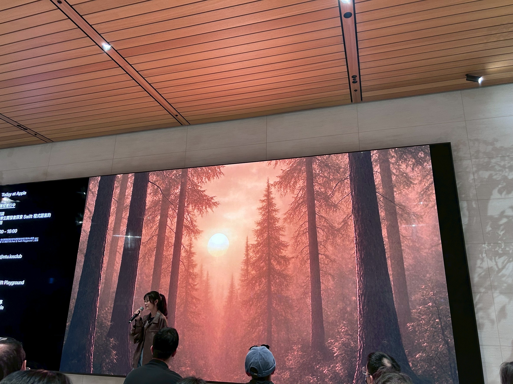

According to the World Health Organization, nearly 1 billion people worldwide are experiencing mental health challenges.
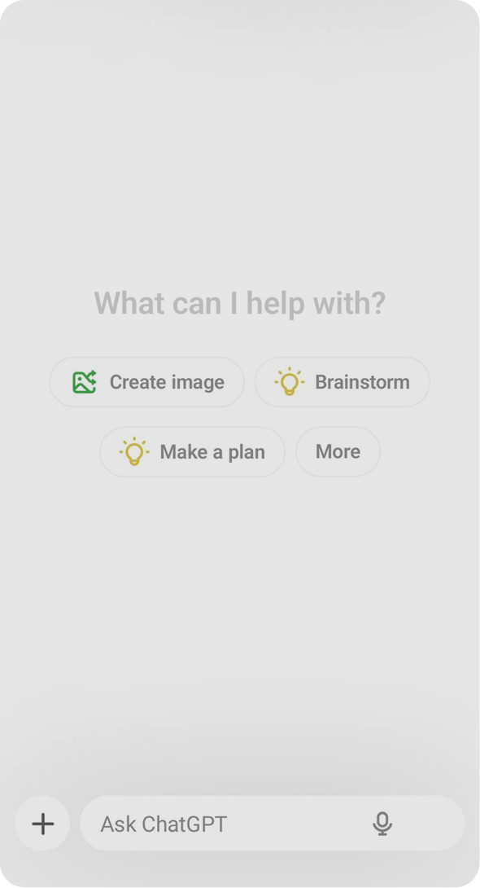
Interactions are restricted to visual and textual experiences, offering only superficial emotional value.
Most AI systems remain stuck in question-and-answer interactions, lacking personalization and emotional depth.
While health apps present endless charts and data, they fail to help users visually step into their own emotions.
Interviews with 9 students at National Taiwan University revealed two major types of stress:
Work deadlines, academic pressure, daily frustrations.
Family conflict, career uncertainty, personal relationships.
“Some participants had tried therapy, but effectiveness often depended on whether they matched well with the therapist.”
User Emotion Input
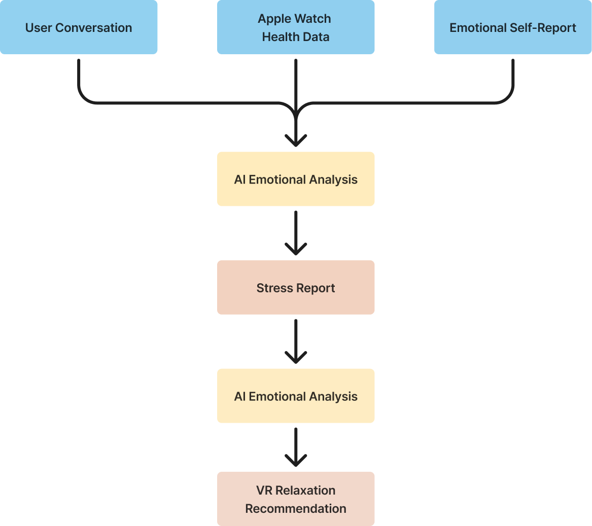
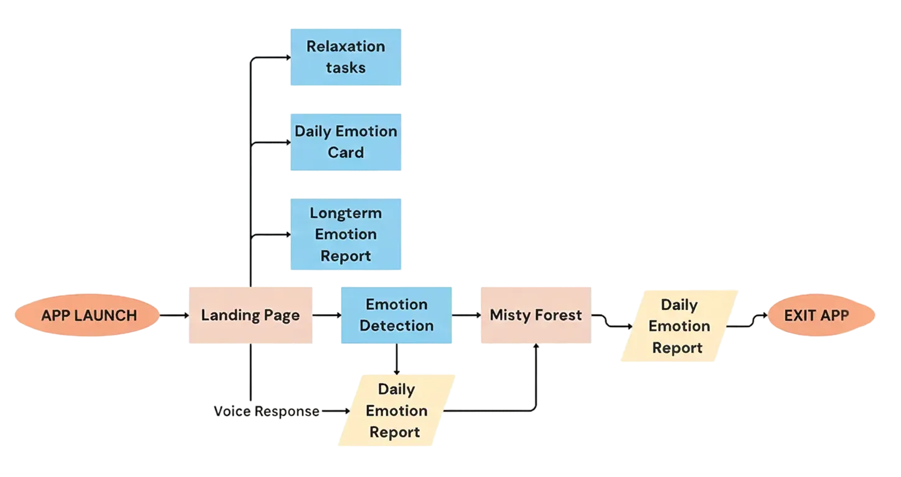
UI design also proved to be quite tricky because, in VR, UI elements that float in the 3D space can easily break the sense of immersion. Apple visionOS still adopts the concept of windows to present information. I carefully considered users’ viewing angles and posture, avoiding placing content too high within their field of vision.
Interactive icon elements should provide a minimum 60 pt target area to ensure they can be selected comfortably and accurately.
For example, consider a mini button (28 pt). Although the visible button appears small, it is surrounded by a 60 pt interactive hit area, making it easy for users to focus on and select with their eyes.
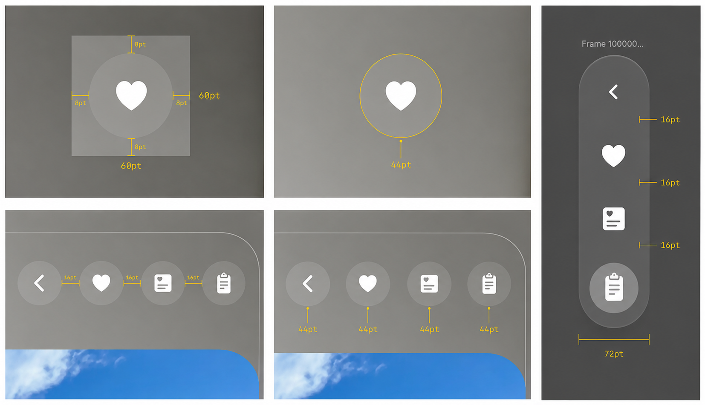
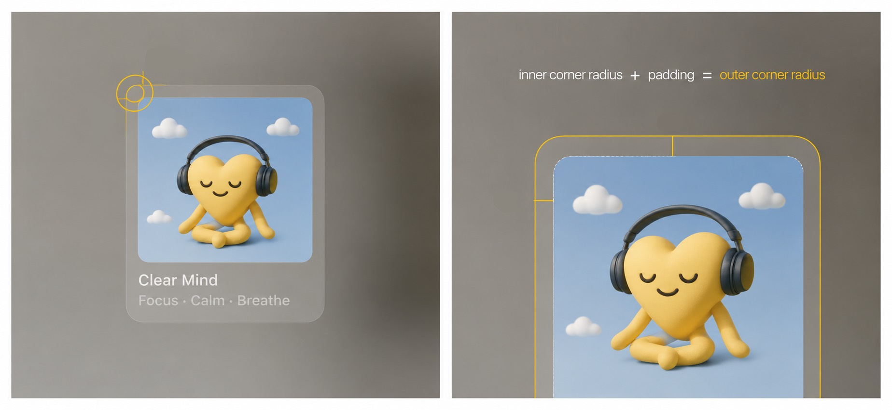
An app icon can contain up to three layers: one Background layer and two Foreground layers (Foreground 1 and Foreground 2).
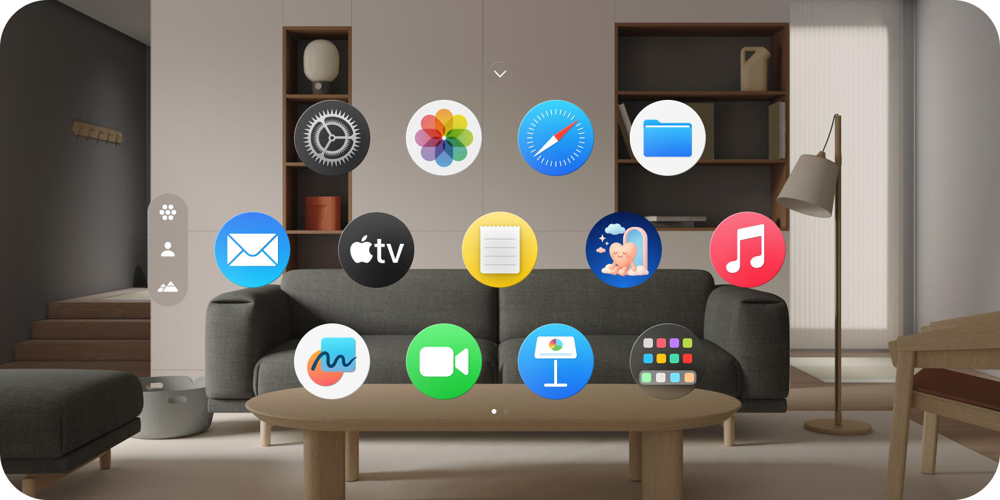
When the layers are combined, the system automatically applies a glass material effect, adding depth, specular highlights, and shadows. Designers should avoid using large semi-transparent elements, as increased transparency can cause layers to blend with shadows cast by underlying layers, reducing visual clarity.
When a user gazes at a specific app icon, the icon enlarges to provide visual feedback.
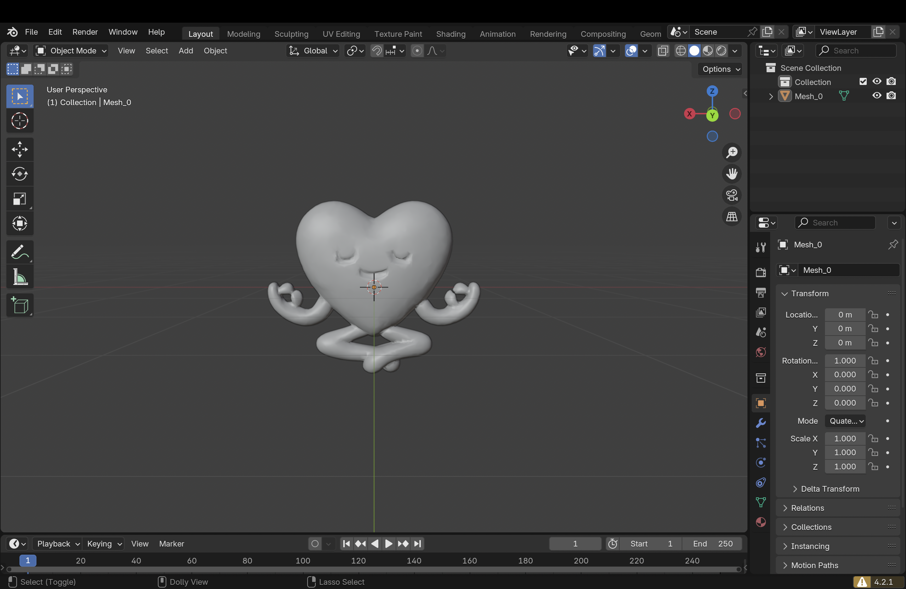
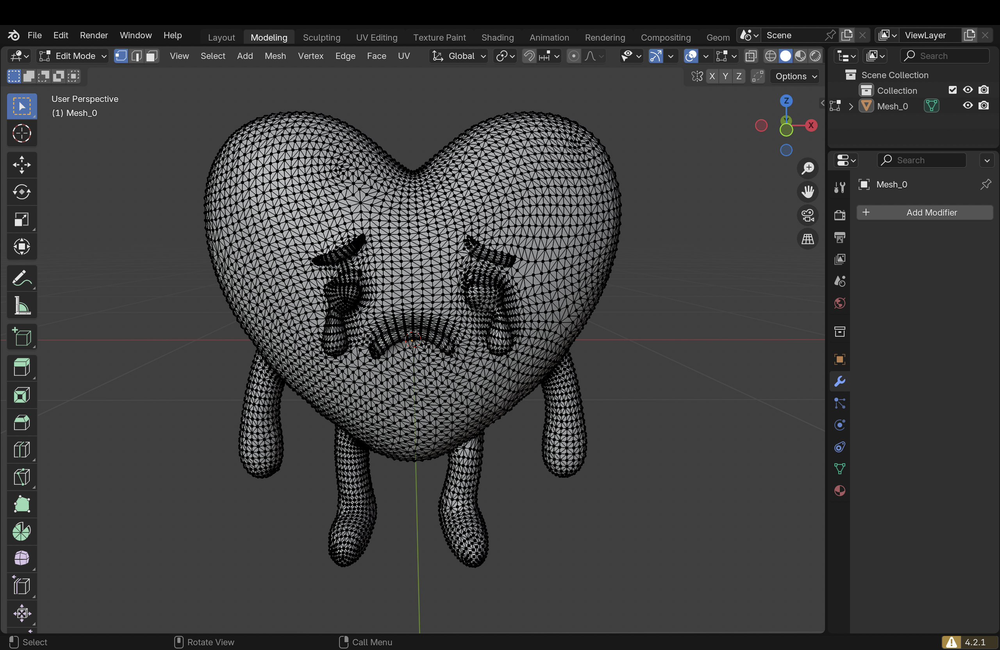
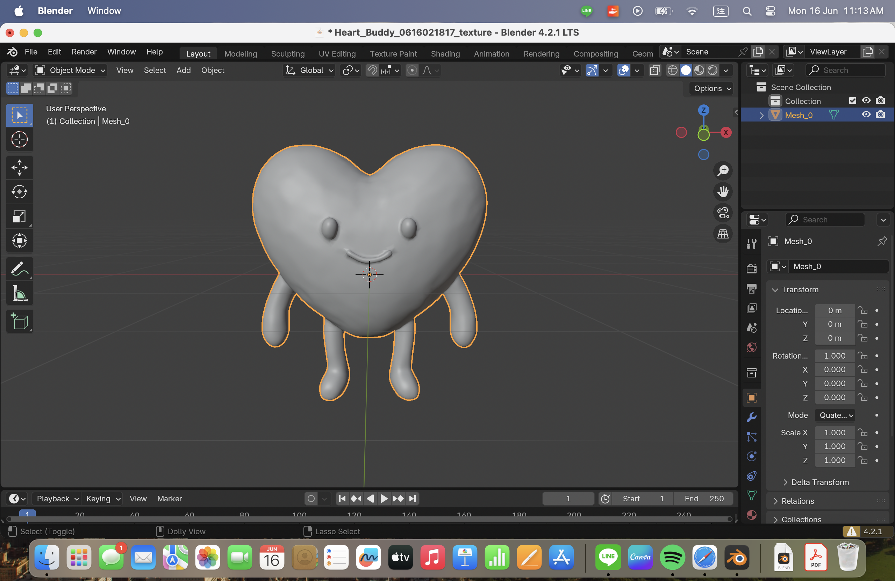
I created 6 different 3D models of Clear, our AI companion, in Blender, each representing an emotional state. Clear’s color and motion dynamically change based on the user’s daily mood and stress level.
After completing the modeling and material setup, we used Apple’s native VR authoring tool, Reality Composer Pro, to build the interactive scene and finally deployed it to Apple Vision Pro.
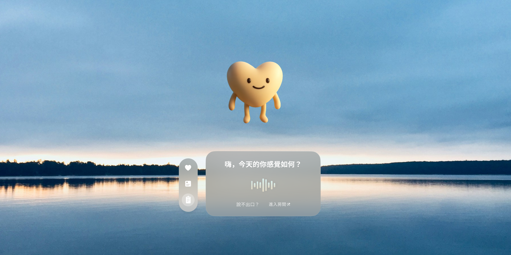
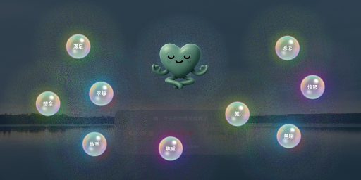
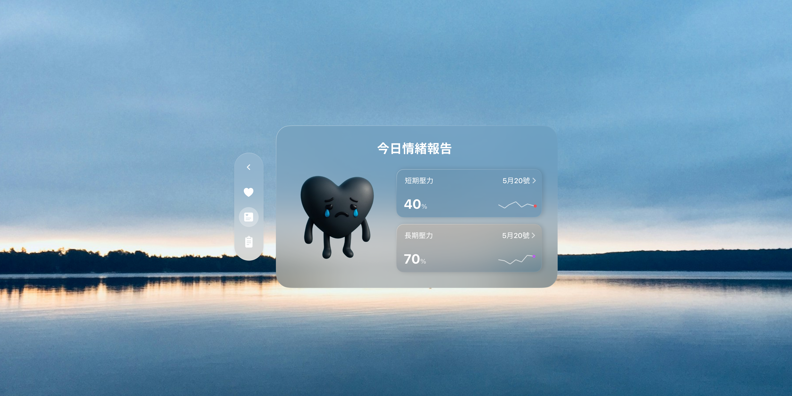
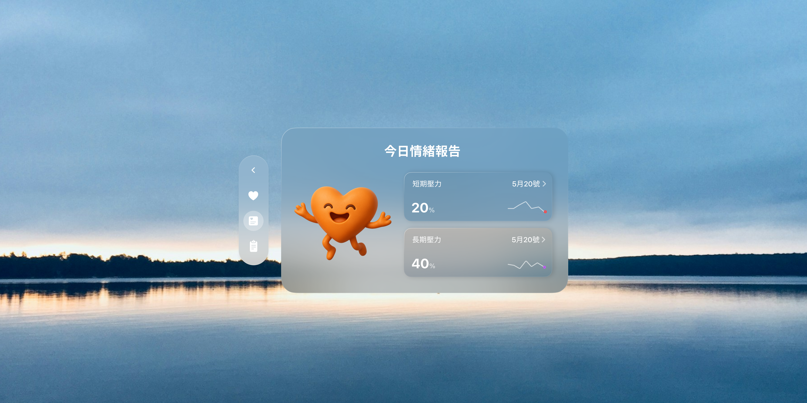
When users open Clear, the AI companion asks how their day has been. Through conversation with Clear and Apple Watch health data analysis, users receive an emotional report that highlights sources of short- and long-term stress. Clear’s color and expressions shift based on the user’s emotional state.
After receiving the stress report, users enter the Misty Forest, where they engage in relaxing activities. For instance, pushing away the mist with their hands reveals photos of meaningful memories. The experience encourages new perspectives for users dealing with pressure, and the forest gradually becomes clearer as the fog is gently pushed away.
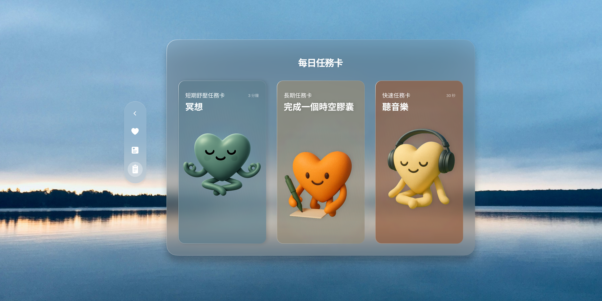
Based on the user’s emotional state, the app provides personalized daily relaxation recommendations, including meditation, music, journaling, and more. After users complete the wellness activities, the app provides an updated emotional report.
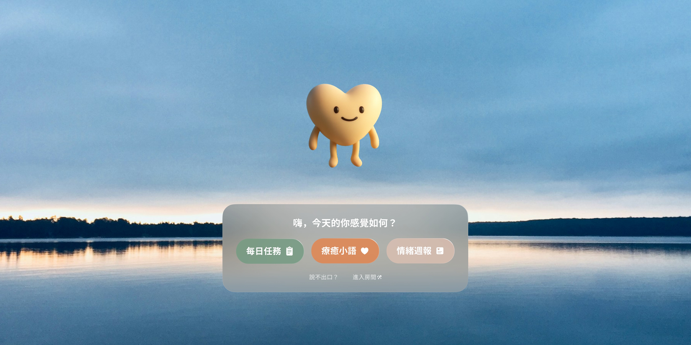
The initial button design featured colorful, semi-transparent style.
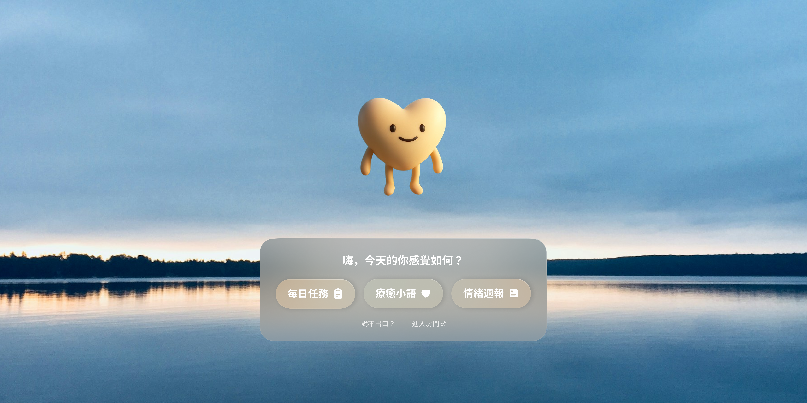
Based on feedback, I switched to white text to ensure clarity while adapting better to varying lighting conditions.
In our second usability test, some users did not realize they could talk to Clear after entering the app. We added a wave diagram that visualizes voice input, making it clear when the system is actively listening.
Through this app, we hope to help users better understand why they may feel emotionally unwell at times. Sometimes, all we need is a space where emotions can be acknowledged and where we can reconnect with ourselves.
We hope Clear can serve as a supportive tool for mental health counseling. Beyond formal therapy sessions, Clear accompanies users in recording their emotions and encourages more people to value mental well-being. For those who are hesitant to seek help, Clear offers a warm presence that helps them find the courage to take the first step.